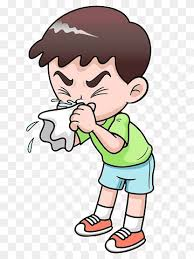

Ear Pain
SYMPTOMS
There are three main types of ear infections. They correspond to the three main parts of the ear: inner, middle, and outer.
Inner ear infection
A condition diagnosed as an inner ear infection may actually be a case of inflammation, and not an actual infection. In addition to ear pain, symptoms include:
- dizziness
- nausea
- vomiting
Inner ear trouble may be a sign of a more serious condition, such as meningitis.
Middle ear infection
The middle ear is the area right behind your eardrum.
A middle ear infection is also known as otitis media. It’s caused by fluid trapped behind the eardrum, which causes the eardrum to bulge. Along with an earache, you may sense fullness in your ear and have some fluid drainage from the affected ear.
Otitis media can come with a fever. You may also have trouble hearing until the infection starts to clear.
Outer ear infection
The outer ear is that part of your ear that extends out from your eardrum to the outside of your head.
An outer ear infection is also known as otitis externa. An outer ear infection often starts as an itchy rash. The ear may become:
- painful
- tender
- red
- swollen
Causes
Ear infections are often caused by bacterial infections. But whether you get an outer or middle ear infection depends on how you become infected.
Middle ear infection
A middle ear infection often originates from a cold or other respiratory problem. The infection moves to one or both ears through the eustachian tubes. These tubes regulate air pressure inside your ear. They connect to the back of your nose and throat.
An infection can irritate the eustachian tubes and cause them to swell. Swelling can prevent them from draining properly. When fluid inside these tubes can’t drain, it builds up against your eardrum.
Learn more: What you should know about eustachian tube dysfunction »
Outer ear infection
An outer ear infection is sometimes called swimmer’s ear. That’s because it often starts as a result of water that remains in your ear after swimming or bathing. The moisture becomes a breeding ground for bacteria. If your outer ear is scratched or if you irritate the outer lining of your ear by putting your fingers or other objects in your ear, a bacterial infection can occur.
HEALTHLINE EVENT
There is hope ahead
Watch Lesley Stahl, Alyssa Milano, D.L. Hughley & more as they recount the past year and look ahead to the future. Watch our insightful and uplifting conversation on hope, vaccines, mental health & more.
Risk factors
One of the reasons children are more likely than adults to get ear infections is that their eustachian tubes are smaller and more horizontal than the tubes in most adults. If you have small eustachian tubes or you have tubes that haven’t developed more of a slope, you’re at a higher risk for developing an ear infection.
You may also be more likely to get an ear infection if you smoke or are around a lot of secondhand smoke. Having seasonal allergies or year-round allergies also puts you at risk. Developing a cold or an upper respiratory infection also increases your risk.
Seeing a doctor
If your only symptom is an earache, you may want to wait a day or two before seeing a doctor. Sometimes ear infections resolve on their own within a few days. If the pain isn’t getting better and you’re running a fever, you should see your doctor as soon as you can. If fluid is draining from your ear or you’re having trouble hearing, you should also seek medical attention.
Diagnosis
During your appointment, your doctor will get your medical history and listen as you describe your symptoms. They’ll also use an otoscope to get a detailed look at your outer ear and your eardrum.
An otoscope is a handheld device with a light and magnifying lens that doctors use to check the health of your ear. A pneumatic otoscope can emit a puff of air in the ear.
When air is pushed against your eardrum, the way the eardrum reacts can help diagnose the problem. If the eardrum moves easily, you may not have a middle ear infection, or at least it may not be serious. If the eardrum barely moves, it suggests that there is fluid pressing against it from the inside.
Another test used to diagnose and evaluate a possible ear infection is called tympanometry. It’s used to evaluate how well your ear is working. A simple hearing test may also be done, especially if it appears that an infection has caused some hearing loss.
Treatment
The type of ear infection you have will determine the type of treatment. In many cases of middle and outer ear infections, antibiotics are necessary.
Treating middle ear infections
You may be prescribed antibiotics. Some antibiotics may be taken orally. Others can be applied directly to the site of the infection with ear drops. Medications for pain, such as over-the-counter pain relievers and anti-inflammatory drugs may also be used to manage your symptoms.
If you’re still experiencing cold or allergy symptoms, you may be advised to take a decongestant, nasal steroids, or an antihistamine.
Another helpful technique is called autoinsufflation. It’s meant to help clear your eustachian tubes. You do this by squeezing your nose, closing your mouth, and very gently exhaling. This can send air through the eustachian tubes to help drain them.
Shop for antihistamines.
Treating outer ear infections
The outer ear should be carefully cleaned. That should be followed by the application of antimicrobial and anti-inflammatory medications on your ear.
Antibiotics may be prescribed if your doctor determines that the infection is bacterial.
If you have a viral infection, you may simply need to tend to the irritation on your ear and wait for the infection to resolve itself. Depending on the type of virus involved, more specialized treatment may be necessary.
Outlook
Proper treatment for your ear infection should eliminate any complications. If you let an ear infection go too long without treatment, you risk permanent hearing loss and possibly having the infection spread to other parts of your head. If you suspect that you may have an ear infection, have it checked out by our doctor.
PREVENTIONS
1. Eustachian tube blockage
An Eustachian tube blockage is one possible cause of a clogged ear. The Eustachian tube connects the middle ear to the throat. Fluid and mucus flows from the ear to the back of the throat through this tube, where it’s swallowed.
But instead of flowing down the throat, fluid and mucus can sometimes become trapped in the middle ear and clog the ear. This blockage usually accompanies an infection, such as the common cold, influenza, or sinusitis. Allergic rhinitis can also cause a blockage in the Eustachian tube.
Other symptoms of a blockage caused by an infection or allergies include:
- runny nose
- coughing
- sneezing
- sore throat
Unblocking the Eustachian tube is important because trapped fluid can cause an ear infection, which is when a bacteria or viral infection gets into the middle ear.
Swimming can also trigger an ear infection. This happens when water remains in the ear after swimming. Known as swimmer’s ear, this moist environment encourages the growth of bacteria or fungus. Signs of an ear infection include:
- ear pain
- redness
- fluid drainage
- fever
2. Higher altitude
Some people experience temporary ear clogging while scuba diving, driving up a mountain, or flying in an airplane. A rapid change in air pressure outside the body causes this blockage.
The Eustachian tube is responsible for equalizing pressure in the middle ear. But at higher altitudes, it can’t always equalize pressure properly. As a result, the change in air pressure is felt in the ears. A clogged ear is sometimes the only side effect of an altitude change. If you develop high altitude sickness, you may also have a headache, nausea, or shortness of breath.
HEALTHLINE EVENT
3. Earwax
Earwax protects your ear by cleansing the ear canal and preventing debris from entering the ear. Wax is normally soft, but it can harden and cause a blockage in the ear. When earwax triggers a clogged ear, other symptoms may include:
- an earache
- ringing in the ears
- dizziness
Using a cotton swab to clean inside the ear is sometimes responsible for these blockages. Cotton swabs shouldn’t be placed inside of the ear. This method of cleaning can push earwax deeper into the ear.
4. Acoustic neuroma
Treatments for a clogged ear
Although a clogged ear is an annoying distraction, it’s usually treatable with home remedies.
Use the Valsalva maneuver
This simple trick helps open your Eustachian tube. To perform this maneuver, take a deep breath and pinch your nose. With your mouth closed, attempt to exhale gently through your nose. This should create enough pressure to “pop” or unclog the ear. Don’t blow too hard to avoid damaging your eardrum. Once your Eustachian tube opens, chew gum or suck on hard candy to keep it opened.
Inhale steam
Turn on a hot shower and sit in the bathroom for 10 to 15 minutes. The steam from the hot water helps loosen mucus in the ear. Another option is placing a hot or warm washcloth over your ear.
Dislodge trapped fluid
Insert your index finger into the affected ear and gently move your finger up and down. This technique helps remove trapped fluid. A hair dryer on a low heat setting held a few inches from your ear might also help dry fluid in the ear.
Click here for more
BRONCHITIES
SYMPTOMS
The most striking symptom of Acute Bronchitis is persistent cough which is generally dry hacking. As the infection progresses, the dry cough may become wet and there is production of mucous. The affected individual may also have low grade fever and may feel lethargic and fatigued. Usually, Acute Bronchitis is a self limiting condition and the affected individual may get better in a couple of weeks but there are instances where the cough may persist for more than a month. In case, the symptoms get worse with presence of high fever, chills, or chest pain with shortness of breath then there are chances that it could be pneumonia.
PREVENTIONS
- As mentioned stopping smoking and try and even stay away from secondhand smoke
- Keeps yourself clean during the flu season
- Avoid direct contact with sick people
- Get flu vaccine every year.
Click here for more
URINARY TRACT INFECTIONS
SYMPTOMS

Symptoms of a UTI depend on what part of the urinary tract is infected.
Lower tract UTIs affect the urethra and bladder. Symptoms of a lower tract UTI include:
- burning with urination
- increased frequency of urination without passing much urine
- increased urgency of urination
- bloody urine
- cloudy urine
- urine that looks like cola or tea
- urine that has a strong odor
- pelvic pain in women
- rectal pain in men
Upper tract UTIs affect the kidneys. These can be potentially life threatening if bacteria move from the infected kidney into the blood. This condition, called urosepsis, can cause dangerously low blood pressure, shock, and death.
Symptoms of an upper tract UTI include:
- pain and tenderness in the upper back and sides
- chills
- fever
- nausea
- vomiting
Chronic UTIs
Most UTIs go away after treatment. Chronic UTIs either don’t go away after treatment or keep recurring. Recurrent UTIs are common among women.
Many cases of recurrent UTIs are from reinfection with the same type of bacteria. However, some recurrent cases don’t necessarily involve the same type of bacteria. Instead, an abnormality in the structure of the urinary tract increases the likelihood of UTIs.
Click here for more
Common Cold
SYMPTOMS

Symptoms of a common cold usually appear one to three days after exposure to a cold-causing virus.
Signs and symptoms, which can vary from person to person, might include:
- Runny or stuffy nose
- Sore throat
- Cough
- Congestion
- Slight body aches or a mild headache
- Sneezing
- Low-grade fever
- Generally feeling unwell (malaise)
- The discharge from your nose may become thicker and yellow or green in color as a common cold runs its course.
- This isn't an indication of a bacterial infection.
PREVENTIONS
There's no vaccine for the common cold, but you can take commonsense precautions to slow the spread of cold viruses:
Wash your hands. Clean your hands thoroughly and often with soap and water, and teach your children the importance of hand-washing. If soap and water aren't available, use an alcohol-based hand sanitizer.
Disinfect your stuff. Clean kitchen and bathroom countertops with disinfectant, especially when someone in your family has a cold. Wash children's toys periodically.
Use tissues. Sneeze and cough into tissues. Discard used tissues right away, then wash your hands carefully.
Teach children to sneeze or cough into the bend of their elbow when they don't have a tissue.
That way they cover their mouths without using their hands.Don't share. Don't share drinking glasses or utensils with other family members.
Use your own glass or disposable cups when you or someone else is sick. Label the cup or glass with the name of the person with the cold.
Steer clear of colds. Avoid close contact with anyone who has a cold.Choose your child care center wisely.
Look for a child care setting with good hygiene practices and clear policies about keeping sick children at home.
Take care of yourself. Eating well, getting exercise and enough sleep, and managing stress might help you keep colds at bay.
Click here for more
Cough
SYMPTOMS
A chronic cough can occur with other signs and symptoms, which may include:
- A runny or stuffy nose
- A feeling of liquid running down the back of your throat (postnasal drip)
- Frequent throat clearing and sore throat
- Hoarseness
- Wheezing and shortness of breath
- Heartburn or a sour taste in your mouth
- In rare cases, coughing up blood
PREVENTIONS
Coughs can be described by:
Behavior or experience. When and why does the cough happen? Is it at night, after eating, or while exercising?
Characteristics. How does your cough sound or feel? Hacking, wet, or dry?
Duration. Does your cough last less than 2 weeks, 6 weeks, or more than 8 weeks?
Effects. Does your cough cause related symptoms such as urinary incontinence, vomiting, or sleeplessness?
Grade. How bad is it? Is it annoying, persistent, or debilitating?
Occasionally, an obstruction in your airway triggers your cough reflex.
If you or your child has ingested something that could be blocking your airway, seek immediate medical attention.
Signs of choking include:
- bluish skin
- loss of consciousness
- inability to speak or cry
- wheezing, whistling, or other odd breathing noises
- weak or ineffective cough
- panic
- Wet cough
- A wet cough, also called a productive cough, is a cough that typically brings up mucus.
- A cold or the flu commonly causes wet coughs.
They can come on slowly or quickly and may be accompanied by other symptoms, such as:
- runny nose
- postnasal drip
- fatigue
Wet coughs sound wet because your body is pushing mucus out of your respiratory system, which includes your:
- throat
- nose
- airways
- lungs
If you have a wet cough, you may feel like there’s something stuck or dripping at the back of your throat or in your chest.
Some of your coughs will bring mucus into your mouth.Wet coughs can be acute and last less than 3 weeks or chronic and last longer than 8 weeks in adults or 4 weeks in children.
The duration of a cough may be a big clue as to its cause.
Conditions that can cause a wet cough include:
a cold or the flu
pneumonia
chronic obstructive pulmonary disease (COPD), including emphysema and chronic bronchitis
acute bronchitis
asthma
Coughs in babies, toddlers, and children that last less than 3 weeks are almost always caused by a cold or the flu.
Remedies for a wet cough
Babies and toddlers. Treat with a cool-mist humidifier. You can also use saline drops in nasal passages and then clean the nose with a bulb syringe.
Don’t give over-the-counter (OTC) cough or cold medication to babies or toddlers under age 2 Children.
A small clinical trialTrusted Source found that 1 1/2 teaspoons of honey given a half-hour before bedtime reduces cough and encourages better sleep in children ages 1 and older.
Use a humidifier at night to moisten the air. Talk with your doctor about OTC cough and cold medications before using them as a treatment.
Adults. Adults can treat acute wet coughs with OTC cough and cold symptom-relieving medications or honey.
If a cough persists for longer than 3 weeks, antibiotic therapy or other treatments may be required.